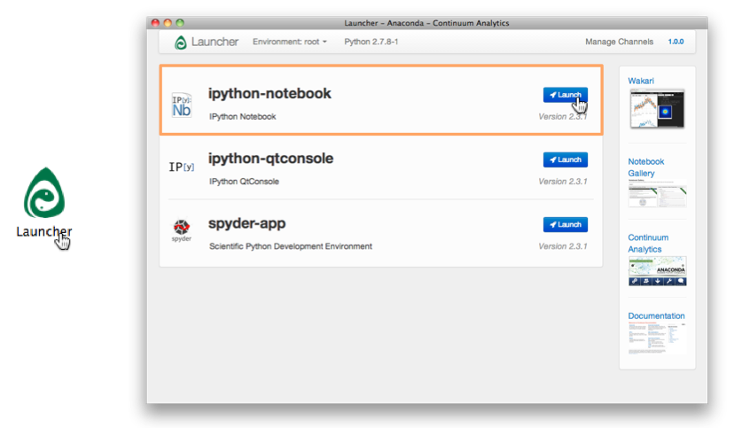
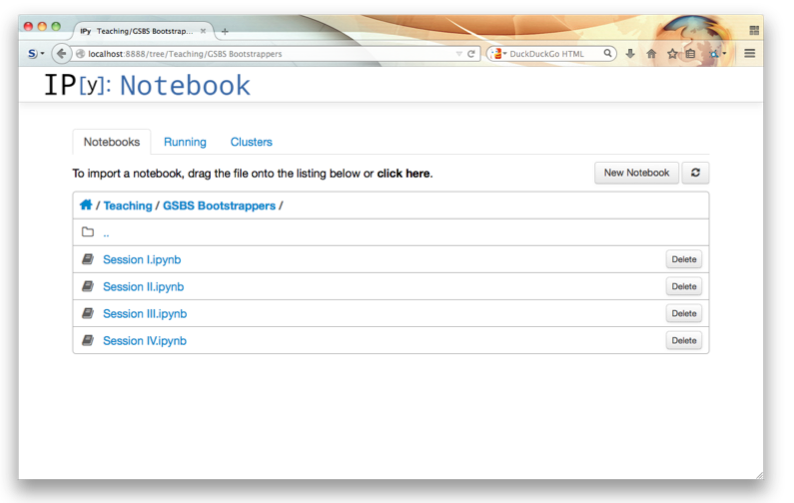

Python 1 Prep
Prep for the Python 1 course
How to prepare for the Python course
This is an introductory course on programming in Python and we will be using iPython Notebook as well as a simple text editor (this can be notepad, textedit, vi, etc.). In order to make sure that everybody has a similar Python setup and a working copy of iPython Notebooks, I’d like you to install the Anaconda Python package on your computer. The download and installation will take some time so, please be sure to do this ahead of time.
Anaconda is a self-contained Python installation, with many useful modules and packages pre-installed. It can be downloaded from here:
https://store.continuum.io/cshop/anaconda/
The download button is on the top-right.
After installing Anaconda, a program called “Launcher” will be installed, the easiest way to find Launcher is to just search for in in search or spotlight. From the launcher, iPython Notebook can be started.
Screenshot of the Anaconda launcher (and icon)
Screenshot of iPython Notebook when first started (content will be different)